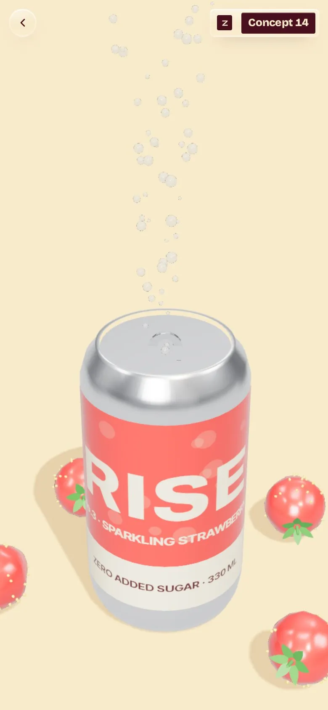

Whole berries
Whole strawberries steep in cold water for a full day. No syrup, no flavouring, nothing pretending to be fruit.

Pop. Fizz. Rise.
Strawberry water and a lot of bubbles. Scroll and the camera circles the can.
What's inside
A short story about a concept can. Everything on this page, the can included, is drawn live in your browser.
Whole strawberries steep in cold water for a full day. No syrup, no flavouring, nothing pretending to be fruit.
Small bubbles that lift the fruit instead of drowning it. You taste the berry first, then the sparkle.
The sweetness is the strawberry's own. Nothing else goes into the can.
Best at four degrees, straight from the can or poured over a glass of ice.
In every can
These are specs of a concept drink, not a real product. The can, the berries and every bubble are modelled in code and drawn in real time.
Rise No.3
A concept can for a fictional drinks brand. Nothing is for sale; the fizz is code.
Zyqor Lab concept. Fictional brand, real-time 3D.